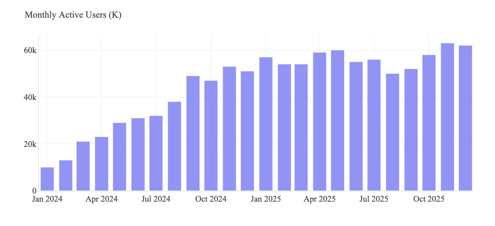
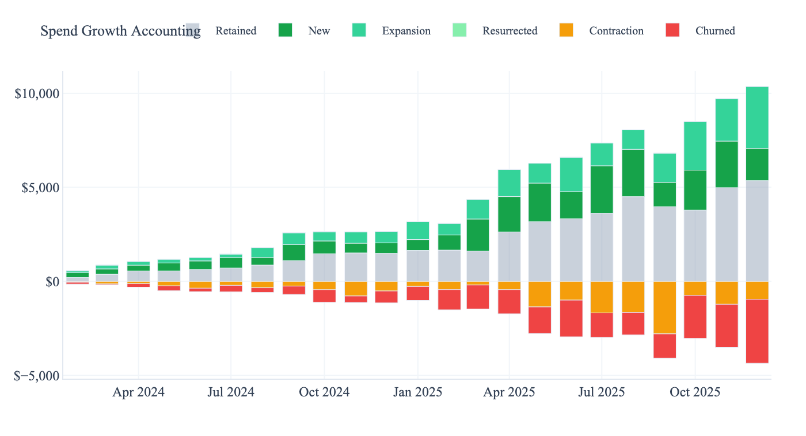
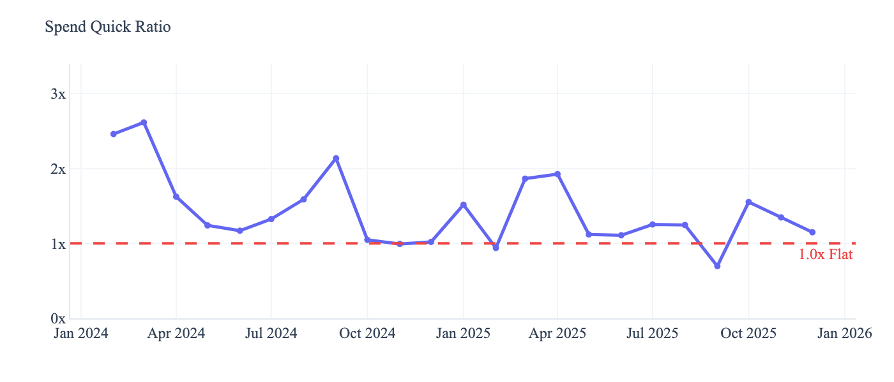
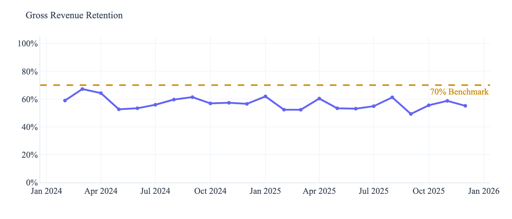
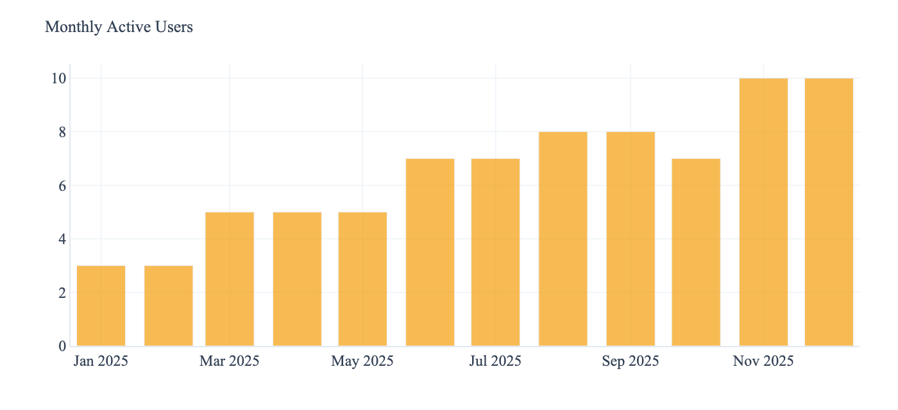
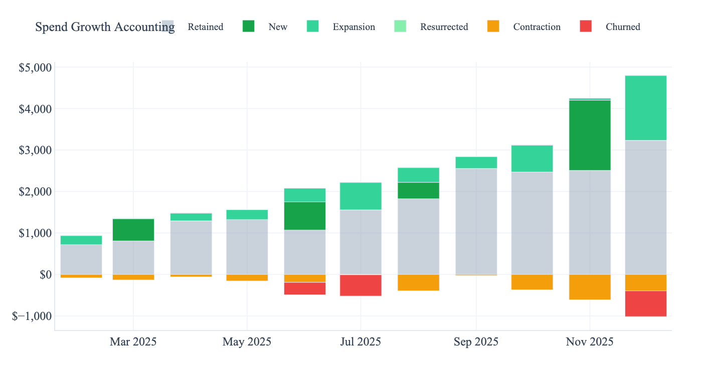
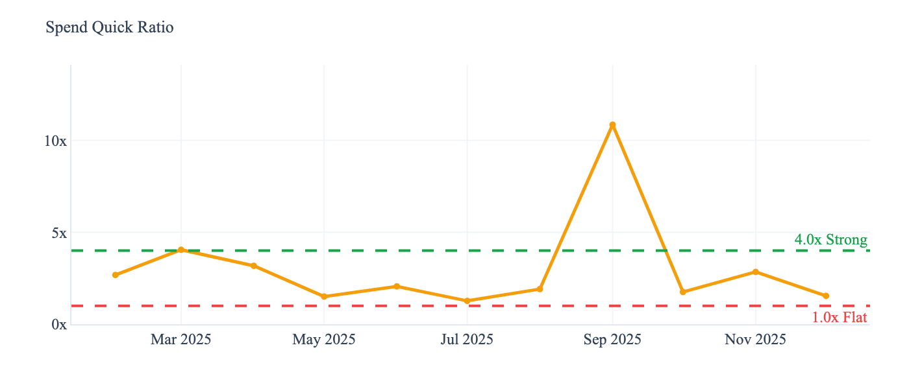
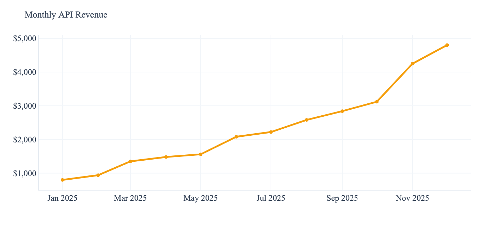
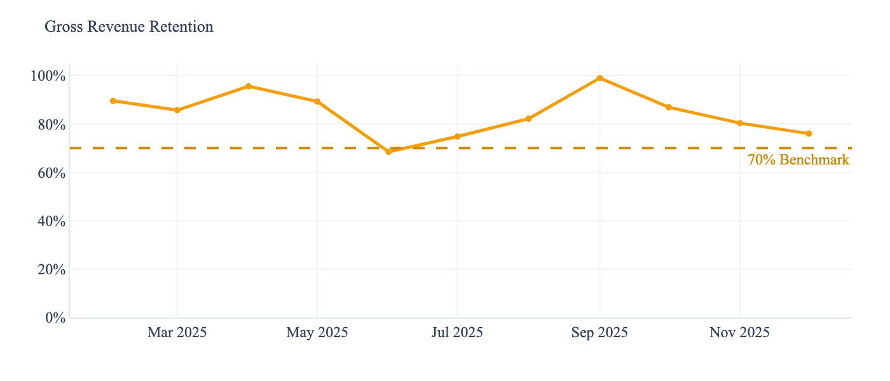

A growth accounting framework for evaluating Anthropic's startup partnerships — identifying which partners are power law candidates, which need monitoring, and how to allocate resources before breakout performance becomes obvious.
Traditional venture capital growth analyses — from Tribe Capital and Social Capital — adapted to the data Anthropic receives through API consumption. No CAC, no burn rate, no sales pipeline. Just what the usage data reveals.
Two partner archetypes tested against the framework. One looks healthy on headline metrics but is structurally weak. The other looks modest but is the power law candidate. Click to expand the full analysis.
WriteFlow is a browser-based writing assistant where end-users interact directly with Claude. Every time a user clicks "Generate" or "Rewrite," that's an API call.
This is a consumer business, which means the growth accounting profile looks fundamentally different from B2B or a dev tool. In these B2C cases, relatively higher churn is expected and is often made up by growth. Typical MAU analyses do not surface this — which is where growth accounting becomes useful.
WriteFlow seems to be growing in MAU. The differentiator is the quality of that growth.

When we use the growth accounting framework, we see diminishing returns with a Quick Ratio of 1.2x — below the 1.5x threshold most VCs consider the minimum for a healthy consumer product. For every dollar of new revenue acquired, the company is losing roughly $0.83 to churn and contraction.


The cohort LTV data introduces nuance. While headline churn is high, the retention curve shows stabilisation after month 2 — consistent with A16Z's framework for AI product retention, which recommends rebasing from Month 3 to filter out "AI tourists" who were never genuine users. The surviving cohorts show increasing spend over time.
Gross Dollar Retention sits at approximately 55%, and Net Dollar Retention at 78%. In isolation, these are concerning — well below the 90% GDR and 110%+ NDR benchmarks for B2B SaaS. But WriteFlow is not B2B SaaS. Against consumer AI benchmarks, where ChartMogul reports a median NDR of 48% for AI-native products under $50/month, WriteFlow's 78% places it in the upper quartile of its peer set.

Deprioritise and monitor with a specific lens: track Q3 and Q4 cohort retention as the leading indicators. If retention holds above 40% and conversion trends upward, the current acquisition-heavy model may be sustainable. If both are flat or declining, the leaky bucket will eventually overwhelm acquisitions, at which point resource allocation should shift to partners with stronger unit economics.
BrieflyAI records and transcribes business meetings using a compliant opt-in infrastructure. Claude generates structured summaries with action items and decisions and updates a company-wide project, progress and task tracker. Sold per-seat to both individual users and mid-market firms, each enterprise client win is a discrete step-function in API usage.
This is both a B2C and B2B product, which means the growth accounting profile looks fundamentally different from WriteFlow. Revenue growth depends on which market gains traction first. B2B wins show up as step-functions — discrete jumps as new clients onboard, with flat or modestly expanding revenue between wins. In either case, churn should be low: once meeting summaries are embedded in a team's workflow, switching costs are high.
MAU here is not nearly as impressive as WriteFlow, nor is it showing dramatic growth. But the growth accounting chart tells a different story entirely.

While BrieflyAI's active developer count is modest at 11, the revenue profile underneath is striking. Revenue climbs in visible steps, each jump corresponding to a new enterprise client win, with retained revenue forming a stable, growing base between wins. There is minimal contraction and almost no churn. The Quick Ratio of 2.4x confirms this.


At headline level, BrieflyAI's MRR of $4,800 is less than half of WriteFlow's $10,361. A surface-level reading would deprioritise BrieflyAI. The framework says the opposite.

When we look at the 3-month trailing CMGR — a backward-looking signal — we see a difference of over 15 percentage points: a nearly 10x growth rate gap. At this CMGR, BrieflyAI overtakes WriteFlow's MRR within 12 months.
Gross Dollar Retention is 84–90%, meaning the vast majority of the revenue base survives month-to-month. Net Dollar Retention is 112% — the existing client base is not just surviving, it is expanding. Every cohort is worth more over time, not less.

BrieflyAI is the power law candidate. The metrics that matter — NDR, GDR, Quick Ratio, cohort expansion — all point in the same direction. The recommendation is to increase resource allocation now: prioritise technical support, explore co-marketing opportunities, and consider earlier handoff to the account management team. The window to deepen this partnership is while BrieflyAI is still small enough to value the attention.
Investments & Business Operations Manager based in London. Background spanning venture capital (Ada Ventures scout, VC Lab with Adeo Resi, SMOK Ventures), programme building ($5.5M→$15.5M grants programme built from zero at RootstockLabs), and strategic operations (led company-wide pivot, board-level presentations).
I understand the EMEA startup ecosystem from both sides: as an investor evaluating founders, and as an operator building the programmes that support them.